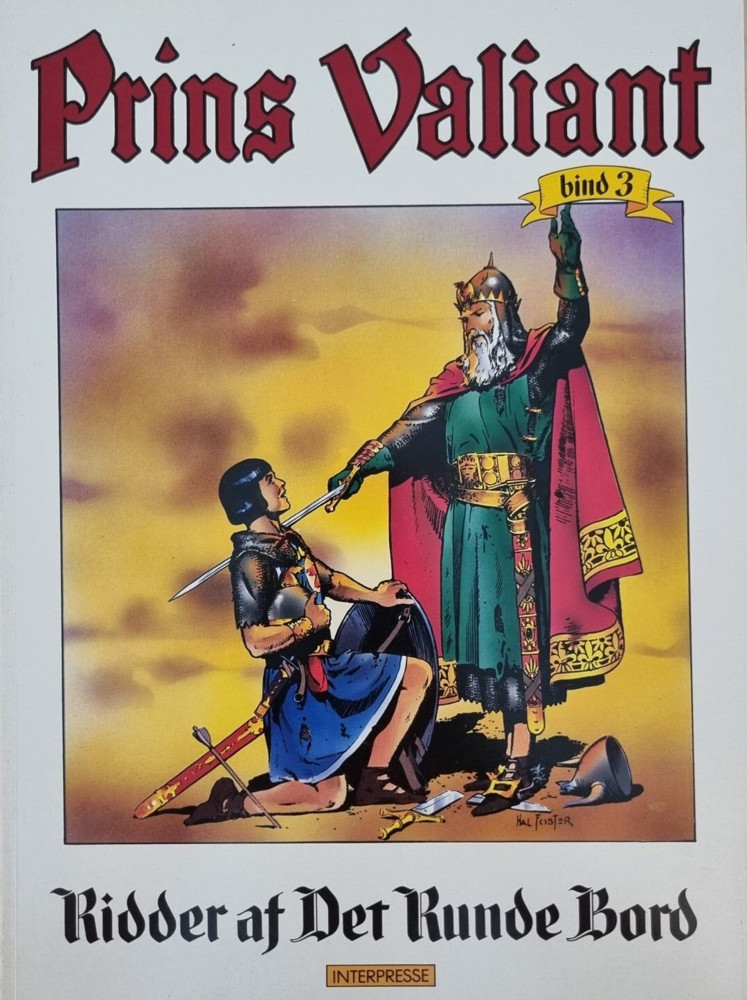
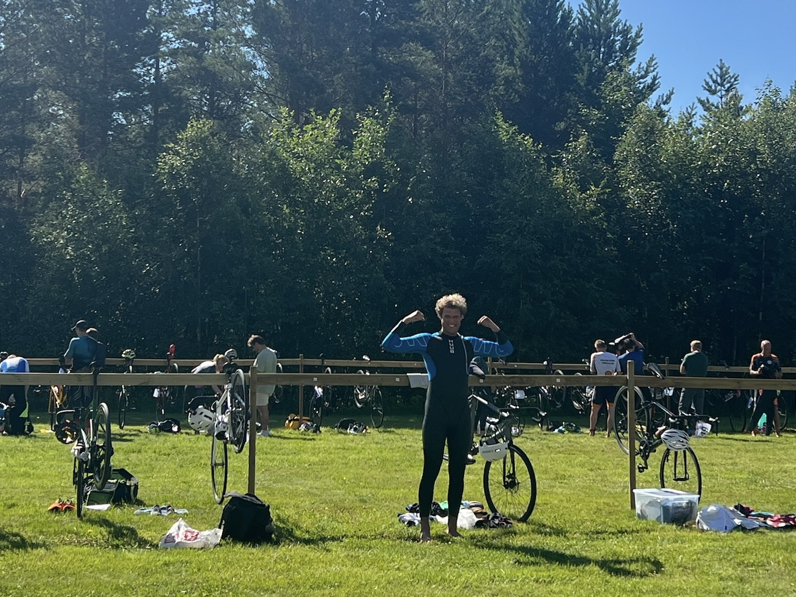
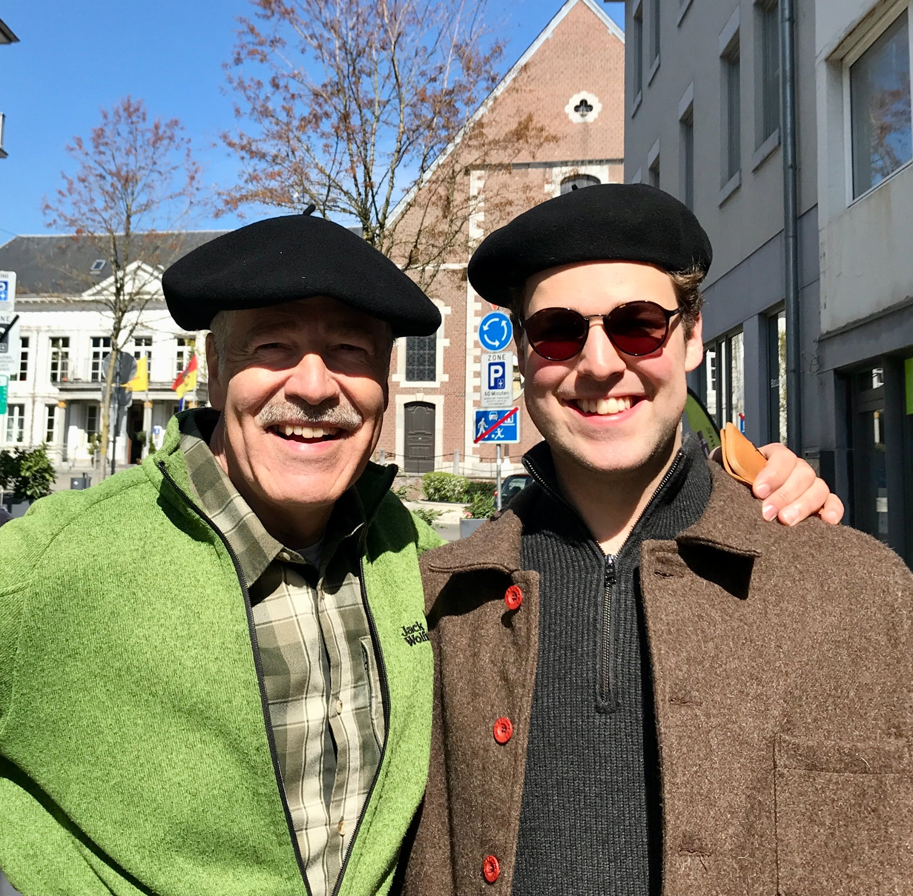

01Om meg
02Prosjekter
Formuessamtalen
Åpne ↗FormuessamtalenRenteriket
Åpne ↗RenteriketPersonlig Økonomi
Åpne ↗Personlig ØkonomiMasteroppgaven, forklart
Åpne ↗Masteroppgaven, forklart


03Forskning
04Bakgrunn
Sep. 2026 – nå
Client Services Manager
Euronext Securities Oslo
2024 – 2026
Handelshøyskolen BI, Oslo
2021 – 2024
Handelshøyskolen BI, Oslo
Hele CV-en, med kurs, erfaring, sertifikater og anbefaling ↗
05Personlig



Bibliotek
Mine fem favoritter


06Kontakt
- valiant-evers